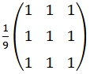
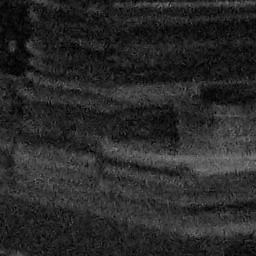
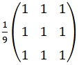
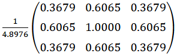

Mean/Box Filter
Below is an example of mean filter (box filter).


Below is an example of mean filter (box filter).

Below is an example of Gaussian blur with .

Below is an example of median filter. Median filter works best for salt-and-pepper noises.
Images used: "Highimgnoise" by Lugiadoom (Public Domain) and "Noise salt and pepper" by Marko Meza (Public Domain)